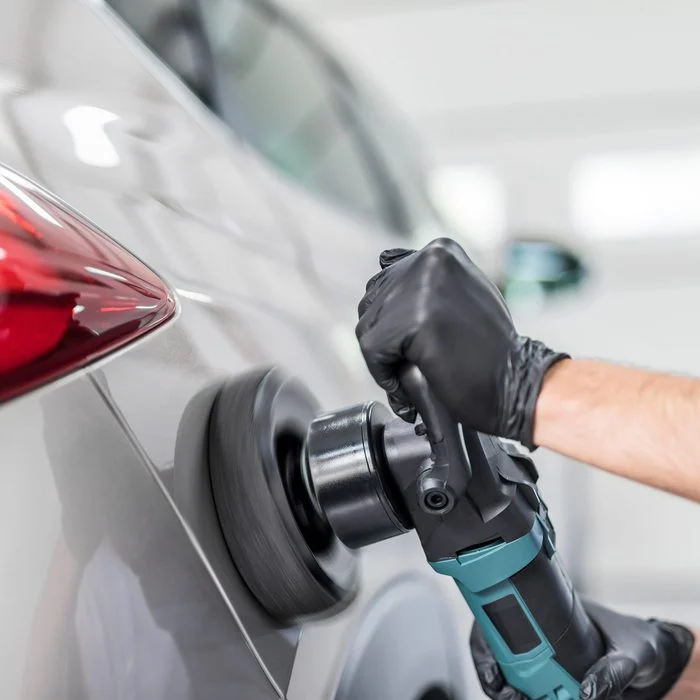
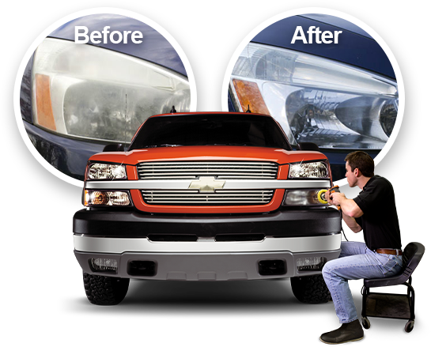

Auto Car Detailing
What is car Detailing?

-
Detailing makes a car look like new. It may start with an
automated car wash, but everything else is done by hand, using
microfiber cloths, tools (vacuums and polishers) and specialty
cleaning supplies (clay bars, degreasers, waxes and sealers).
-
A standard car detailing usually includes the following procedures on
the outside of the vehicle: Hand-wash and dry the exterior; Removing
soap residue and cleaning swirls with a clay bar; Polish the vehicle
to restore the shine; Apply wax or another sealer to protect the
finish.
-
On the inside, standard detailing involves the following: Vacuum the
seats, carpets, mats and cargo area or trunk, sometimes steam-cleaning
to remove tough stains; Wipe or wash the dashboard, console and doors;
Clean all the glass, including the windshield, windows and rearview
mirrors; Clean and condition leather upholstery; Deodorize the vehicle
and add perfume to give it a “new car” smell.
When Is Car Detailing Important?
-
If you like driving a new-looking car, detailing is the only way to
maintain that kind of appearance. Even if you aren’t all about
appearance, detailing is important when: You want a more comfortable
ride. Detailers remove clutter, clean the glass and get rid of
unwanted odors. You want to sell your car.
- You can quickly increase a car’s value with good detailing.
- The car’s finish is damaged or failing.
-
Restorative detailers can correct defects and apply a protective
coating to prevent further damage.
- You want to lengthen the life of your car.
-
Some detailers offer underbody and engine cleaning, which sometimes
reveals oil leaks and other problems.
- You have a vintage vehicle.
- Without detailing, an old car just looks old.
- With detailing, it becomes a collector’s item.
Types of Car Detailing
- The quality of car detailing is in … the details.
-
The more of them the detailers address, the better the results and the
higher the price tag. There are five types of service.
-
Not all companies offer all of them, but you don’t always need the
more expensive ones.
-
Standard exterior: The quality varies from hand-washing and polishing
after the car has been through an automatic car wash to a more
extensive service that includes a complete hand washing, cleaning the
wheel rims and tires, paint claying, polishing and sealing the finish.
-
Standard interior: Basic services involve vacuuming the mats, wiping
down the dashboard and console and cleaning the windows and mirrors.
-
A more expensive service offers steam-cleaning, deodorizing and
disinfecting. Full car: This includes interior and exterior detailing.
-
Restorative detailing: Also known as corrective detailing, this
focuses on the exterior and addresses things like scratches in the
finish and flaking or fading paint.
-
It can take several days, and it’s expensive. But when completed, the
car often looks better than it did new. Show-car detailing: This is
the Rolls-Royce of detailing services, reserved for high-end cars that
seldom see any road time.
DIY Car Detailing vs. Hiring a Pro
-
If you’re like my brother, you might actually enjoy spending your
weekends detailing your car.
-
As long as that doesn’t involve restoration, there’s no reason not to
go for it.
-
Depending on the quality of service, car detailing can cost from $50
to $300.
-
That’s a substantial amount you can save by DIYing your car care.
You’ll need tools and products, so there’s an initial investment.
-
Restorative detailing, on the other hand, is best handled by a pro.
-
Without the necessary skill and equipment, you’ll probably make your
car look worse.
-
It takes a professional’s eye to match the paint color and apply it in
just the right way to match the sheen on the rest of the vehicle.
- If you botch this, you may need to repaint the entire car.
Are Your Headlights Looking Old?

-
We’ve all had to deal with the issue of dull looking headlights.
-
That’s because plastic ages and oxidizes over time just like your
paint.
-
UV radiation as well as chemicals can degrade plastic causing it to
cloud or yellow. Even the most expensive vehicles on the planet
eventually experience this issue, but it’s a quick fix for the
detailing pros at Tint World®.
-
We can restore any dull or yellowed headlights back to looking like
new condition.
- Ask us about our Headlight Restoration Services today!